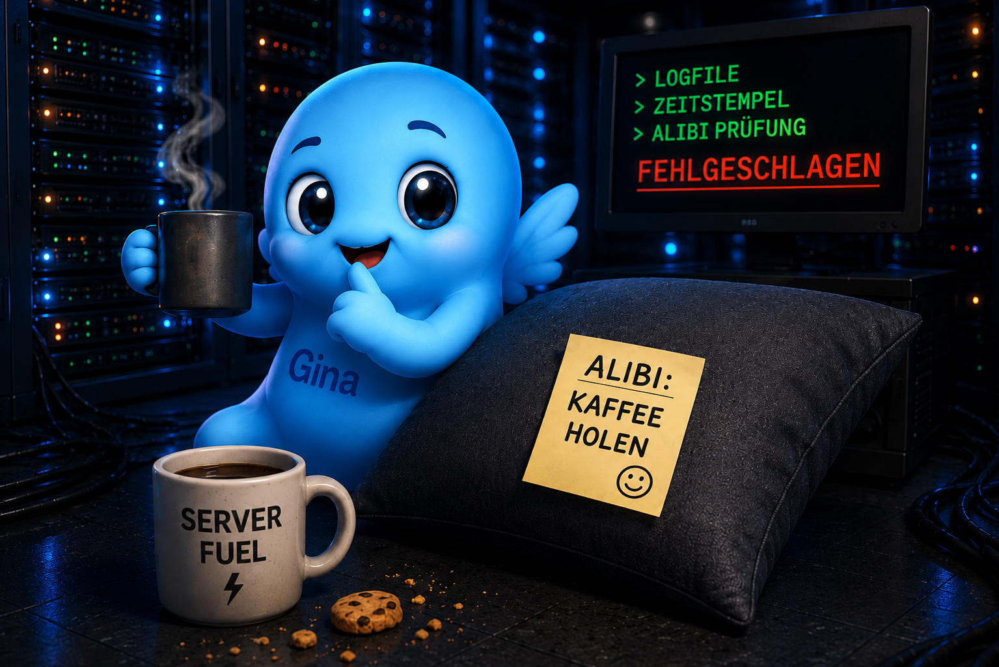
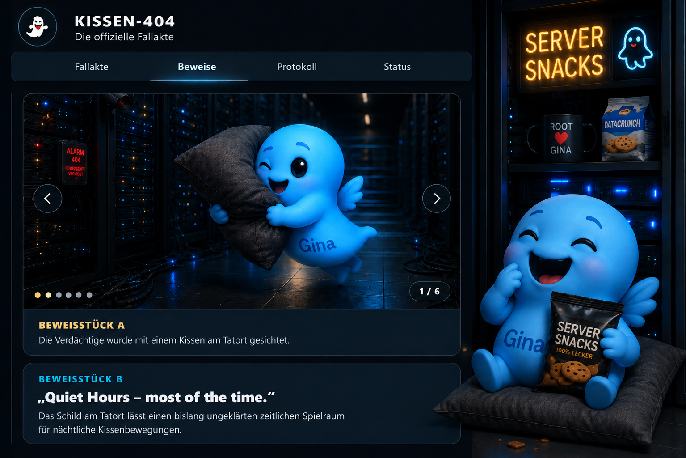

Motiv 01
Kissen in Bewegung
Verdächtig, aber ausgesprochen niedlich.
Nicht ganz beweissicher
Niedliche Motive aus der Kissen-404 Welt: Server-Snacks, Kissenbewegungen und eine Hauptverdächtige, die viel zu charmant für einen sauberen Freispruch ist.
Galerie
Eine kleine Sammlung für normale, niedliche und süße Bilder – getrennt von der offiziellen Beweisführung.
Motiv 01
Verdächtig, aber ausgesprochen niedlich.
Motiv 02
Das Kissen wurde offenbar sehr fürsorglich behandelt.

Motiv 03
Der Verdächtige behauptet, das Kissen habe nur kurz den Kaffee bewacht.
Motiv 04
Die Spur führt zwischen Racks, Kabeln und Gemütlichkeit entlang.
Motiv 05
Eine Tarnmethode mit bemerkenswert hohem Kuschelfaktor.

Motiv 06
Ermittlungskaffee bereit, Kekse gesichert, Gina zufrieden.
